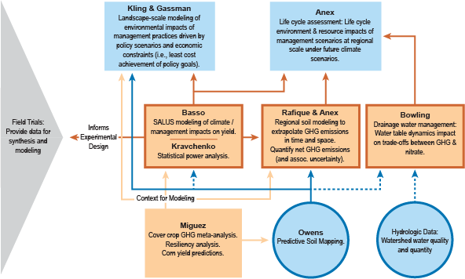

Systems Analysis & Predictive Modeling (Obj. 3)
Obj. 3 - Apply models to research data and climate scenarios to identify impacts and outcomes that could affect the sustainability and economic vitality of corn-based cropping systems.
Overview
Objective 3 addresses the overall project's goal of utilizing field research data in local, regional and national scale models. The models examine current and predicted implications of the project management practices on C, N and water under different climate conditions. The findings will assist in evaluating crop management practices based on adaptation and mitigation capacities.
Researchers are developing an analysis infrastructure to provide insight into the impacts and outcomes that will likely affect the sustainability and economic vitality of corn-based cropping systems. This infrastructure includes a database system to manage experimental data and a variety of physical and economic models capable of analyzing impacts at multiple scales.
Climate scientists agree that global changes are present now and will continue, but there is great uncertainty regarding the impact these global changes have on local and regional cropping systems. Scientists also agree that there is no single best climate model either for the globe or for a region (such as the Midwest), so that it is necessary to consider a suite of climate scenarios to represent the expected range of plausible future climates.
Research Questions
A full list of research questions for the systems analysis and predictive modeling activities can be found here.
Obj. 3 Scientists & Staff
Click here for more information about scientists and staff involved in systems analysis and predictive modeling.
2011 Annual Conference Posters
Click here to view posters from the 2011 CSCAP Annual Conference detailing work underway for each objective.